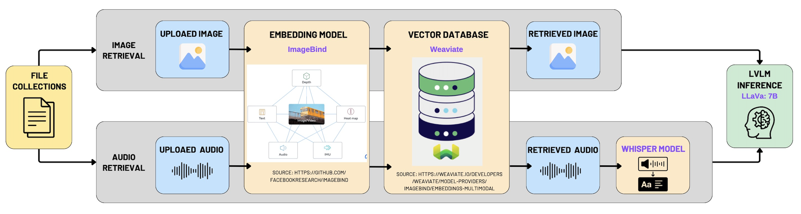
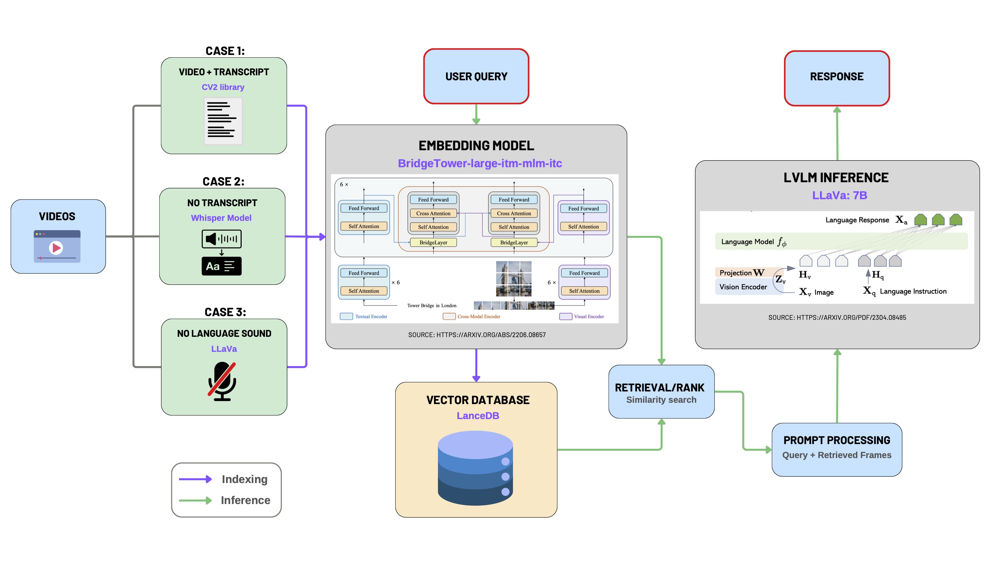

System Design
System Architecture
High-Level System Overview
The multimodal Retrieval-Augmented Generation (RAG) system employs a client-server architecture, clearly delineating responsibilities into frontend and backend subsystems. These subsystems interact via a standardized RESTful API interface, adhering to modular software engineering best practices. A specialized vector database facilitates efficient storage, indexing, and retrieval of embedding vectors, essential for ensuring high-performance information retrieval and response generation.
Frontend Architecture
The frontend component is implemented using a Single-Page Application (SPA) architecture based on React and TypeScript. This structure follows modern web development principles, such as modular component design, reactive state management, and responsive user interfaces.
- Capturing user interactions and query inputs.
- Initiating asynchronous requests to backend services through well-defined API endpoints.
- Dynamically displaying retrieved data and generated responses to users through intuitive, user-friendly interfaces.
This modular frontend design enhances maintainability, allowing for seamless integration of future features and efficient troubleshooting.
Backend Architecture
The backend architecture is designed around a Flask-based RESTful API, embracing a microservice-oriented architectural style that emphasizes clear separation of concerns and high cohesion within modules. The backend's primary responsibilities encompass:
- API Request Management: Receiving, validating, and preprocessing incoming HTTP requests from the frontend subsystem.
- Multimodal Embedding Generation: Employing sophisticated embedding models, notably BridgeTower-large, to encode input data into semantic vector representations.
- Multimodal Inference Engine: Leveraging LLaVA-7B for context-aware multimodal reasoning and response generation based on embedding retrieval results.
- Data Persistence and Retrieval: Interfacing with a dedicated vector database optimized for high-dimensional similarity search.
This structured backend leverages layered software architecture principles, facilitating scalability, maintainability, testability, and clearly defined data processing workflows.
Vector Database Layer
The vector database acts as the critical storage and retrieval engine within the system, optimized for rapid indexing and efficient nearest-neighbor similarity searches across high-dimensional embedding vectors. It utilizes advanced indexing techniques to support real-time retrieval performance, significantly enhancing response speed and accuracy in serving multimodal queries.
Data Flow and Interaction
The data processing workflow aligns with standard engineering patterns and consists of clearly defined stages:
- User Input Capture: Users interact directly with the React frontend, entering queries and selecting input data.
- Structured Communication: The frontend issues structured HTTP requests to backend RESTful API endpoints.
- Backend Processing Pipeline:
- Embedding models generate semantic vector embeddings from input data.
- The vector database efficiently executes similarity searches to retrieve relevant embeddings.
- The retrieved embeddings and original query inputs are processed by the multimodal inference engine (LLaVA) to generate a context-sensitive response.
- Result Delivery: The backend packages generated responses into JSON objects and returns them via API responses.
- User Presentation: The frontend dynamically renders and presents responses, concluding the interaction loop.
Design Patterns
To enhance code maintainability, scalability, and extensibility, the following software engineering design patterns were strategically employed throughout our multimodal Retrieval-Augmented Generation (RAG) application.
| Design Pattern | Usage in the Project |
|---|---|
| Singleton Pattern |
The embedding models (BridgeTower, ImageBind) and multimodal inference engine (LLaVA) are implemented as singletons. This ensures only one instance of these heavyweight, resource-intensive components is instantiated during runtime, optimizing resource utilization and maintaining consistent behavior.
|
| Facade Pattern | The backend Flask API acts as a Facade, simplifying interactions between frontend clients and complex backend subsystems (e.g., embedding models, vector databases, inference engines). This pattern hides internal complexities and provides a clear, unified interface. |
| Strategy Pattern | Different multimedia preprocessing strategies (e.g., handling videos with transcripts, without transcripts, or silent) leverage the Strategy Pattern. This allows the backend to dynamically select suitable strategies based on media type, enhancing flexibility and extensibility. |
| Observer Pattern | Frontend React components follow the Observer Pattern for state management, responding to asynchronous backend updates. Components observe changes in query results and update the UI automatically, ensuring real-time responsiveness and loose coupling. |
| Chain of Responsibility Pattern | The backend inference pipeline applies the Chain of Responsibility pattern. Each stage (embedding, retrieval, inference) handles its dedicated task in a structured workflow, enabling modularity, clarity, and easier troubleshooting. |
Additionally, core software design principles were rigorously followed throughout development:
- Single Responsibility Principle (SRP): Each class maintains a clear, focused purpose to improve readability and testability.
- Don’t Repeat Yourself (DRY): Code reuse and modularity are enforced across the codebase to reduce redundancy.
- Refactoring Best Practices: Proactive cleanup eliminated common code smells such as magic numbers, overly long methods, and tightly coupled logic.
APIs Definition
This document describes the clearly defined RESTful API endpoints within our system.
1. Chat Interaction (/chat)
Method: POST
Description: Facilitates conversational interactions with multimodal data, supporting user queries accompanied by optional multimedia uploads.
Request (form data):
query(String, required)collection_name(String, optional)retrieve(Boolean/String, optional)session_id(String, optional)uploaded_file(File, optional)
Response (JSON):
{
"response": "<generated response>",
"images": ["<base64-encoded image>", ...],
"audios": [
{
"audio": "<base64-encoded audio>",
"transcript": "<audio transcript>"
}
],
"session_id": "<session identifier>"
}
2. Upload File with Geolocation (/new_upload)
Method: POST
Description: Allows uploading multimedia files into specified collections, optionally attaching descriptive and geographic metadata.
Request (form data):
file(File, required)collection_name(String, required)description(String, optional)address(String, optional)latitude(Float, optional)longitude(Float, optional)
Response (JSON):
{
"status": "success",
"message": "File 'example.jpg' successfully inserted into collection 'example_collection'."
}
3. Retrieve Collections (/collections)
Method: GET
Description: Returns a list of available collections from the vector database.
Response (JSON):
{
"collections": ["collection1", "collection2", ...]
}
4. Geographic Search (/new_geo_search)
Method: GET
Description: Performs geographic-based searches within specified collections using coordinates, addresses, radius, and optional keywords.
Request (query parameters):
collection_name(String, required)address(String, optional)radius(Float, required)keyword(String, optional)latitude(Float, optional)longitude(Float, optional)
Response (JSON):
{
"results": [ ... ]
}
5. Generate Geographic Map (/geo_map)
Method: GET
Description: Generates an interactive map displaying geographic search results.
Request (query parameters):
collection_name(String, required)address(String, optional)radius(Float, optional, default: 2km)keyword(String, optional)latitude(Float, optional)longitude(Float, optional)
Response: Renders interactive HTML page geo_map.html.
6. Video Upload and Processing (/upload_video)
Method: POST
Description: Handles video downloading, frame extraction, transcript generation, multimodal embedding, and ingestion into the vector database.
Request (form data):
video_url(String, required)video_without_language_sound(Boolean/String, optional)n(Integer, optional, default: 6)
Response (JSON):
{
"status": "success",
"video_path": "<stored video path>"
}
7. List All Uploaded Videos (/all_uploaded_videos)
Method: GET
Description: Lists titles of all videos indexed in the vector database.
Response (JSON):
{
"video_titles": ["video1 title", "video2 title", ...]
}
8. Chat with Video Content (/chat_with_video)
Method: POST
Description: Enables conversational interaction with indexed video content, retrieving relevant frames and generating semantic responses.
Request (form data):
video_title(String, required)query(String, required)
Response (JSON):
{
"response": "<generated textual response>",
"image": "<retrieved frame path>",
"image_base64": "<base64-encoded retrieved frame>"
}
Multimodal Backend Architecture
The multimodal backend architecture of our system is structured to robustly handle multimodal data retrieval, embedding, and inference tasks, clearly divided into two primary pipelines: Multimodal Retrieval-Augmented Generation (RAG) and Video-based Conversational Retrieval (Chat with Video). Both pipelines integrate advanced embedding techniques, dedicated vector storage solutions, and sophisticated language-vision inference models to deliver accurate and meaningful responses to user queries.
1. Multimodal Retrieval-Augmented Generation (RAG) Backend Architecture
The multimodal RAG backend architecture facilitates intelligent retrieval and inference from multimedia file collections, specifically images and audio files.
Data Input and Retrieval:
- Multimedia file collections are segmented into two distinct input streams:
- Image Retrieval: Images uploaded by users.
- Audio Retrieval: Audio clips uploaded by users.
Embedding Layer:
- The backend leverages the ImageBind multimodal embedding model, which transforms images and audio into unified semantic vectors.
- This ensures cross-modal interoperability, enabling efficient similarity searches across different media types.
Vector Database Storage:
- Embedding vectors are stored in a dedicated vector database optimized for high-speed nearest-neighbor semantic searches.
- This enhances responsiveness for real-time query operations.
Multimodal Retrieval and Inference:
- User queries are embedded via ImageBind and used to query the vector database.
- Retrieved audio files are transcribed using the Whisper model to enhance semantic richness.
- Results and queries are forwarded to LLaVA-7B for context-aware response generation.
2. Chat with Video Backend Architecture
The backend pipeline for video-based conversational retrieval addresses scenarios involving diverse video input types and audio/transcript availability.
Video Data Preprocessing:
- Case 1: Videos with Transcript
- Frames are extracted via
cv2, using available transcripts for indexing.
- Frames are extracted via
- Case 2: Videos without Transcript
- Transcripts are generated using the Whisper ASR model.
- Frames and transcripts are indexed together to form a searchable context base.
- Case 3: Videos without Language Audio
- No transcripts are generated. Semantic meaning is derived directly from visual features using LLaVA.
Multimodal Embedding:
- BridgeTower-large-itm-mlm-itc model embeds both frames and transcripts into unified semantic vectors.
- This model fuses vision and language using cross-modal attention.
Vector Database Storage:
- Embedded frame-text pairs are indexed and stored in a high-performance vector database, supporting semantic retrieval.
Retrieval and Ranking:
- User queries are also embedded through BridgeTower.
- Similarity search retrieves the most relevant frames and contextual segments.
Prompt Processing and Inference：
- Retrieved frame-transcript-query triplets are compiled into structured prompts.
- Prompts are passed to LLaVA-7B for final response generation.
- Responses are returned to the frontend for rendering.